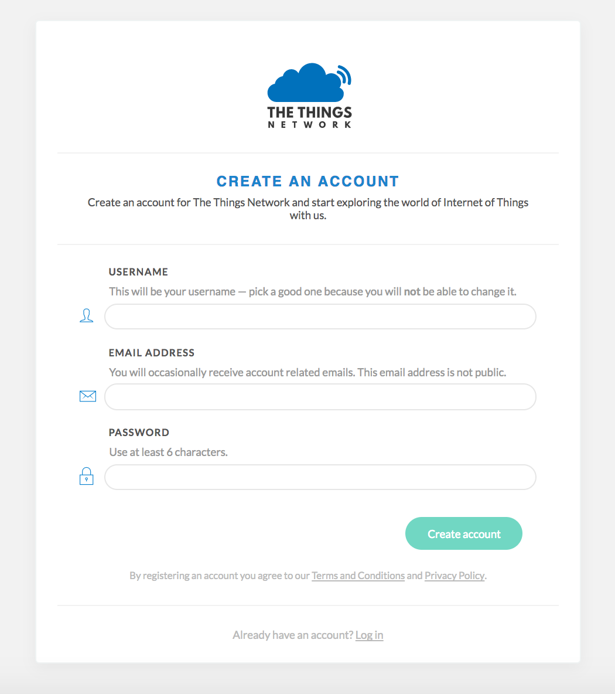
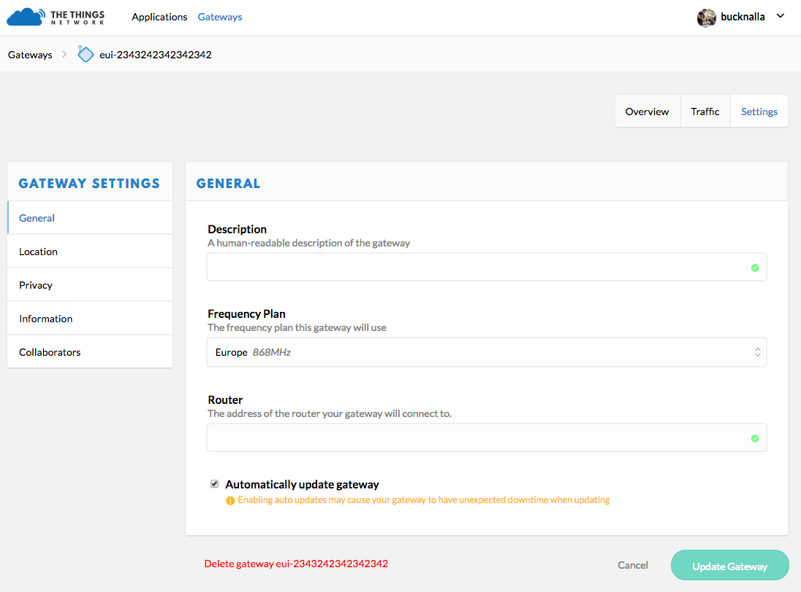
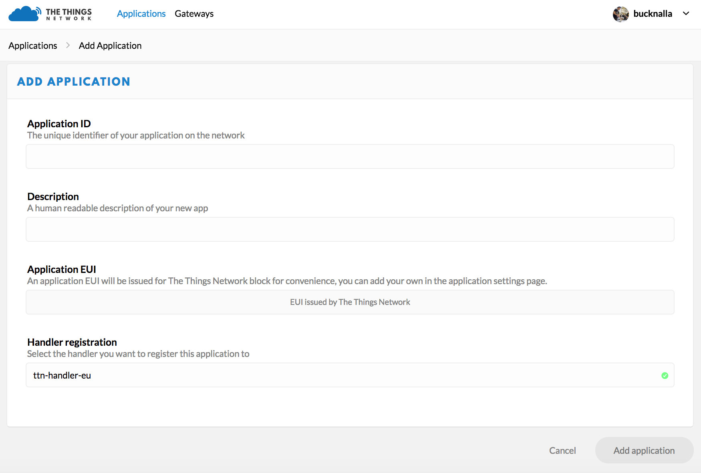

Práctica 8. Redes LoRaWAN
Nota
Esta práctica es opcional para aquellos que opten a evaluación por proyecto y obligatoria para los que se evaluen por prácticas. Las tareas aquí descritas son por tanto obligatorias para los que se presentan por prácticas, los que vayan por proyecto no tienen qué hacerlas.
Objetivos
Los objetivos didácticos de esta práctica son:
-
Introducir conceptos básicos de programación usando el entorno MicroPython
-
Experimentar con el protocolo LoRa sobre placas reales (Pycom LoPy4).
-
Desarrollar ejemplos reales de topologías punto-a-punto, en estrella y en malla usando tecnología LoRa.
Introducción al entorno de desarrollo LoRa
Pycom LoPy4
La placa Pycom LoPy4 es una placa de desarrollo con soporte para múltiples tecnologías de red (WiFi, BLE, LoRa y Sigfox), que equipa un SoC Espressif ESP32, 4 MBytes de memoria RAM, 8 MBytes de memoria flash externa, aceleración hardware para cómputo en punto flotante y soporte para desarrollo usando el framework MicroPython. Además, integra interfaces UART (2), SPI, I2C (2), I2S y soporte para tarjetas microSD, junto con 24 pines GPIO. Según sus especificaciones, puede soportar rangos de transmisión de hasta 40 kilómetros (para comunicación nodo a nodo) o 22 kilómetros (funcionando en modo gateway), en este caso con soporte de hasta 100 nodos conectados.
Tarea
Como parte de la práctica, se te proporciona un entorno hardware compuesto por una placa LoPy4 con antena sub-GHz LoRa y una placa de expansión (Expansion Board 3.0) con conexión microUSB, que permitirá la programación de la primera. Investiga en la página del fabricante las características de ambos elementos y comprueba que las conexiones de antena son correctas. Sigue las instrucciones del fabricante para actualizar el firmware de la placa, en función del sistema operativo con el que vayas a trabajar (https://docs.pycom.io/updatefirmware/device/). Instala el firmware de tipo legacy, versión 1.29.0.b4.
Micropython
Micropython es una implementación de la versión 3.5 del lenguaje de programación Python, reducida y adaptada específicamente para su correcta ejecución en microcontroladores con recursos limitados. A cambio de una huella en memoria mayor, permite un desarrollo y prototipado mucho más rápido que lenguajes de menor nivel (por ejemplo, C). Como dato, a día de hoy, sus requisitos básicos incluyen 256kB de memoria ROM y 16kB de RAM.
MicroPython implementa un sistema de ficheros mínimo directamente en la memoria flash de la placa en la que se ejecuta, siempre que ésta disponga de más de 1Mb de almacenamiento. En este sistema de ficheros, existen dos archivos con un papel especial: boot.py y main.py. Estos dos ficheros se ejecutan, en este orden, en el arranque del sistema, por lo que deberán contener las partes principales de los programas que deseemos ejecutar tras el inicio de la placa. boot.py contiene típicamente parámetros generales de configuración (por ejemplo, redes WiFi a las que conectar en el arranque), mientras que main.py suele contener la lógica principal del programa.
Tarea
Instala, en tu sistema operativo el plugin Pymakr para VS Code tal y como se muestra en la página del fabricante pymark. Deberás instalar también el paquete nodejs (sudo apt install nodejs).
Creación de un proyecto en Pymark
-
En primer lugar, crea un directorio nuevo y vacío en tu sistema. Por ejemplo, podemos crear un directorio llamado MiProyecto.
-
Abre el directorio en VS Code (Open Folder).
-
Necesitaremos crear una jerarquía para nuestro proyecto. Típicamente, la jerarquía de un proyecto sigue el siguiente esquema:
MiProyecto
|-lib
|-biblioteca.py
|boot.py
|main.py
En este primer ejemplo, simplemente utilizaremos un fichero main.py. Adicionalmente, crearemos un fichero de configuración para nuestro proyecto a pulsando el botón Allcommands de la barra inferior y seleccionando Pymakr > Project Settings, que añadirá un fichero pymakr.conf al proyecto. Para más información sobre el contenido de este fichero, consulta pymakr/settings.
Controlando el LED de nuestra placa
Añadiremos a nuestro fichero principal (main.py) la lógica para controlar un LED de nuestra placa. Para ello, añadiremos, en primer lugar, las bibliotecas a importar:
import pycom
import time
La primera de las bibliotecas añade la funcionalidad necesaria para controlar específicamente ciertas funcionalidades de las placas Pycom. La segunda nos ayudará a fijar temporizadores.
Tarea
Habrás observado que, al arrancar la placa Pycom, el LED de la placa parpadea de forma regular. Para desactivar este parpadeo, puedes utilizar la sentencia pycom.heartbeat(False).
Añade esta sentencia a tu código y ejecútalo (Run) para coprobar que tu placa puede ejecutar tus códigos.
Tarea
Una vez comprobada la funcionalidad del botón Run, modifica el código para que el LED cambie de color (R-G-B) cada segundo. Encontrarás la documentación necesaria en la página de documentación de Pycom.
El uso del botón Run es intuitivo y muy útil en el desarrollo, pero no es adecuado en despliegues, ya que, como puedes observar, el código desarrollado no se almacena en la placa, y por tanto se pierde en el reinicio. Para salvar esta limitación, experimenta con el botón Upload y observa cómo tu código sigue ejecutándose tras un reinicio.
REPL
REPL (Read Evaluate Print Loop) es el nombre que recibe la línea de órdenes interactivas ofrecida por las placas Pycom (y otras muchas compatibles con MicroPython). REPL proporciona historial de comandos, completado de comandos (usando la tecla Tab), ejecución y parada de código (usando Ctrl-C) y otras funcionalidades que facilitan el desarrollo sobremanera.
Existe un conjunto de atajos que pueden resultar de interés a la hora de interactuar con la placa. Entre ellos:
-
Ctrl-A Entra en modo raw: permite pegar y copiar código, sin realizar un echo de cada línea introducida.
-
Ctrl-B Pasa REPL a modo normal.
-
Ctrl-C Cancela cualquier entrada o interrumpe el código que se está ejecutando.
-
Ctrl-D Realiza un soft-reset de la placa.
-
Ctrl-E Entra en modo paste, lo que permite copiar y pegar fragmentos de texto. Para salir de este modo es necesario utilizar el atajo Ctrl-D.
-
Ctrl-F Realiza un arranque seguro del dispositivo; en otras palabras, no ejecuta los scripts boot.py ni main.py en el momento del arranque.
Infraestructura LoRa a desarrollar
Conexión a red WiFi
Todas las placas Pycom soportan WiFi, por lo que es trivial realizar una conexión a este tipo de red. En primer lugar, inicializamos el módulo WLAN y construimos un objeto para interactuar con este tipo de conexión:
import machine
from network import WLAN
wlan = WLAN()
wlan.mode() # Chequeamos el modo - Por defecto WLAN.AP (punto de acceso).
Para conectar a un punto de acceso, en primer lugar deberemos configurar nuestra placa como station en lugar de access point (modo por defecto):
import machine
from network import WLAN
wlan = WLAN(mode=WLAN.STA) # Modo station.
Y a continuación podemos, sin más, conectar a un SSID existente:
nets = wlan.scan()
for net in nets:
if net.ssid == 'SSID':
print('Red encontrada!')
wlan.connect(net.ssid, auth=(net.sec, 'clave'), timeout=5000)
while not wlan.isconnected():
machine.idle() # Ahorro de energia mientras esperamos.
print('WLAN: conexion establecida!')
break
Si necesitamos asignar una IP estática a nuestra placa en el proceso de arranque, podemos hacerlo en el fichero boot.py:
import machine
from network import WLAN
wlan = WLAN() # get current object, without changing the mode
if machine.reset_cause() != machine.SOFT_RESET:
wlan.init(mode=WLAN.STA)
# Esta configuracion debe coincidir con la del router.
wlan.ifconfig(config=('192.168.178.107', '255.255.255.0', '192.168.178.1', '8.8.8.8'))
if not wlan.isconnected():
wlan.connect('SSID', auth=(WLAN.WPA2, 'clave'), timeout=5000)
while not wlan.isconnected():
machine.idle()
Tarea
Conecta tu placa a un punto de acceso wifi (por ejemplo el router de clase o tu teléfono móvil). Experimenta asignando una IP estática a la placa.
Tarea
Investiga cómo conseguir que tu placa sea capaz de almacenar una lista de redes inalámbricas a las que potencialmente conectar, y realice un proceso de intento de conexión a cada una de ellas en el momento del arranque, hasta llegar a conectar con una de ellas.
Podéis consultar la documentación del API en https://docs.pycom.io/firmwareapi/.
LoRaMAC
Comunicación punto-a-punto
En esta primera parte de la práctica, utilizaremos la interfaz LoRa directamente (raw mode), por lo que se ignora la capa LoRaWAN para enviar y recibir datos. De este modo, los datos son enviados en crudo, sin formato ni encriptación posible, y no se añade ningún tipo de direccionamiento a nivel de enlace en los frames enviados.
En este ejemplo, utilizaremos dos placas LoPy. El script a desarrollar se basa en un bucle infinito (while) con un tiempo de espera variable (y aleatorio) entre envíos para minimizar las posibilidades de transmisión simultánea entre dos o más dispositivos. El siguiente código realiza envíos y recepciones del modo descrito:
from network import LoRa
import socket
import machine
import time
# initialise LoRa in LORA mode
# Please pick the region that matches where you are using the device:
# Asia = LoRa.AS923
# Australia = LoRa.AU915
# Europe = LoRa.EU868
# United States = LoRa.US915
# more params can also be given, like frequency, tx power and spreading factor
lora = LoRa(mode=LoRa.LORA, region=LoRa.EU868)
# create a raw LoRa socket
s = socket.socket(socket.AF_LORA, socket.SOCK_RAW)
while True:
# send some data
s.setblocking(True)
s.send('Hello')
# get any data received...
s.setblocking(False)
data = s.recv(64)
print(data)
# wait a random amount of time
time.sleep(machine.rng() & 0x0F)
Tarea
Modifica el programa anterior para que cada LoPy cambie el estado de iluminación de su LED en el momento en el que reciba cada frame. El resultado debería iluminar/apagar alternativamente dicho LED con la recepción de cada dato.
Tarea
Estudia la documentación del módulo LoRa en https://docs.pycom.io/firmwareapi/pycom/network/lora, especialmente los parámetros de inicialización/construcción del módulo. Experimenta, en tu placa, variando cada uno de los valores configurables (por ejemplo, frequency, tx_power, bandwidth, spreading factor, preamble y coding rate. Describe (y entrega) una descripción sobre su impacto en la transmisión, así como (si te es posible) su impacto en la velocidad de transmisión o distancia máxima de transferencia.
Comunicación gateway - nodo
El ejemplo que se muestra a continuación propone una topología en la que un gateway o elemento central recibe datos crudos LoRa desde uno o más nodos LoRa. El código, en este caso, es distinto en función del elemento de la topología que estemos tratando.
El gateway, en nuestro caso, realizará una escucha pasiva a la espera de la recepción de un paquete por parte de los nodos. Observa que el formato del paquete recibido (y acuse de recibo --ACK-- enviado en respuesta) está definido al inicio del propio script, y debe coincidir con el formato esperado en los nodos:
import socket
import struct
from network import LoRa
# A basic package header, B: 1 byte for the deviceId, B: 1 byte for the pkg size, %ds: Formatted string for string
_LORA_PKG_FORMAT = "!BB%ds"
# A basic ack package, B: 1 byte for the deviceId, B: 1 byte for the pkg size, B: 1 byte for the Ok (200) or error messages
_LORA_PKG_ACK_FORMAT = "BBB"
# Open a LoRa Socket, use rx_iq to avoid listening to our own messages
# Please pick the region that matches where you are using the device:
# Asia = LoRa.AS923
# Australia = LoRa.AU915
# Europe = LoRa.EU868
# United States = LoRa.US915
lora = LoRa(mode=LoRa.LORA, rx_iq=True, region=LoRa.EU868)
lora_sock = socket.socket(socket.AF_LORA, socket.SOCK_RAW)
lora_sock.setblocking(False)
while (True):
recv_pkg = lora_sock.recv(512)
if (len(recv_pkg) > 2):
recv_pkg_len = recv_pkg[1]
device_id, pkg_len, msg = struct.unpack(_LORA_PKG_FORMAT % recv_pkg_len, recv_pkg)
# If the uart = machine.UART(0, 115200) and os.dupterm(uart) are set in the boot.py this print should appear in the serial port
print('Device: %d - Pkg: %s' % (device_id, msg))
ack_pkg = struct.pack(_LORA_PKG_ACK_FORMAT, device_id, 1, 200)
lora_sock.send(ack_pkg)
Observa como _LORA_PKG_FORMAT se utiliza como un mecanismo para identificar los distintos dispositivos existentes en la red. Por su parte, _LORA_PKG_ACK_FORMAT es un mecanismo de acuse de recibo sencillo para responder al nodo que envió el paquete.
Por otra parte, el código del nodo se reduce al envío de paquetes y a la espera activa a sus respectivos acuses de recibo:
import os
import socket
import time
import struct
from network import LoRa
# A basic package header, B: 1 byte for the deviceId, B: 1 byte for the pkg size
_LORA_PKG_FORMAT = "BB%ds"
_LORA_PKG_ACK_FORMAT = "BBB"
DEVICE_ID = 0x01
# Open a Lora Socket, use tx_iq to avoid listening to our own messages
# Please pick the region that matches where you are using the device:
# Asia = LoRa.AS923
# Australia = LoRa.AU915
# Europe = LoRa.EU868
# United States = LoRa.US915
lora = LoRa(mode=LoRa.LORA, tx_iq=True, region=LoRa.EU868)
lora_sock = socket.socket(socket.AF_LORA, socket.SOCK_RAW)
lora_sock.setblocking(False)
while(True):
# Package send containing a simple string
msg = "Device 1 Here"
pkg = struct.pack(_LORA_PKG_FORMAT % len(msg), DEVICE_ID, len(msg), msg)
lora_sock.send(pkg)
# Wait for the response from the gateway. NOTE: For this demo the device does an infinite loop for while waiting the response. Introduce a max_time_waiting for you application
waiting_ack = True
while(waiting_ack):
recv_ack = lora_sock.recv(256)
if (len(recv_ack) > 0):
device_id, pkg_len, ack = struct.unpack(_LORA_PKG_ACK_FORMAT, recv_ack)
if (device_id == DEVICE_ID):
if (ack == 200):
waiting_ack = False
# If the uart = machine.UART(0, 115200) and os.dupterm(uart) are set in the boot.py this print should appear in the serial port
print("ACK")
else:
waiting_ack = False
# If the uart = machine.UART(0, 115200) and os.dupterm(uart) are set in the boot.py this print should appear in the serial port
print("Message Failed")
time.sleep(5)
Tarea
Adapta el código anterior a algún escenario real, por ejemplo:
-
Fija un tiempo máximo de espera para la recepción de acuse de recibo y el reenvío del paquete (o para descartarlo).
-
Incrementa el tamaño de paquete modificando _LORA_PKG_FORMAT a BH\%ds; el carácter H permite usar 2 bytes para el tamaño (véase https://docs.python.org/2/library/struct.html#format-characters para más información).
-
Reduce el tamaño de mensaje y adáptalo a un escenario real de tu elección.
LoRaWAN. Topología en estrella. Implementación de un Gateway LoRaWAN
En esta sección trabajaremos en el desarrollo de un gateway implementado en una LoPy utilizando MicroPython. Este tipo de ejemplo permite conectar a una red LoRaWAN existente (por ejemplo, The Things Network --elegida en nuestro caso-- o Loriot), haciendo que nuestro gateway simplemente actúe como forwarder de paquetes recibidos desde nodos hacia un servidor remoto.
El código del gateway está dividido en tres scripts diferenciados: main.py, config.py y nanogateway.py. Conjuntamente, su funcionalidad es configurar el gateway para realizar una conexión a una red preferida (WLAN) y para actuar como packet forwarder hacia un servidor.
Obtención del Gateway ID
La mayoría de servidores LoRaWAN esperan un identificador de gateway (gateway ID) en forma de número hexadecimal de 64 bits, típicamente nombrado como EUI-64). La práctica recomendada consiste, durante el desarrollo del gateway, en obtener este ID a partir de una expansión de la MAC WiFi de la placa (que es un valor de 48 bits). Podemos obtener este identificador usando el siguiente código:
from network import WLAN
import ubinascii
wl = WLAN()
ubinascii.hexlify(wl.mac())[:6] + 'FFFE' + ubinascii.hexlify(wl.mac())[6:]
El resultado será algo similar a b'240ac4FFFE008d88', donde 40ac4FFFE008d88 sería nuestro identificador de gateway, que usaremos en la configuración del servidor LoRa para identificar de forma unívoca a nuestro dispositivo.
El fichero main.py
Este fichero, como se ha dicho anteriormente, se ejecuta al inicio e importa, en primer lugar, el script de configuración config.py para inicializar el gateway. Una vez configurado, se arranca la lógica del gateway.
""" LoPy LoRaWAN Nano Gateway example usage """
import config
from nanogateway import NanoGateway
if __name__ == '__main__':
nanogw = NanoGateway(
id=config.GATEWAY_ID,
frequency=config.LORA_FREQUENCY,
datarate=config.LORA_GW_DR,
ssid=config.WIFI_SSID,
password=config.WIFI_PASS,
server=config.SERVER,
port=config.PORT,
ntp_server=config.NTP,
ntp_period=config.NTP_PERIOD_S
)
nanogw.start()
nanogw._log('You may now press ENTER to enter the REPL')
input()
El fichero config.py
El fichero de configuración config.py contiene parámetros generales de configuración para el servidor y la red LoRa a la que deseamos conectar nuestro dispositivo. En función de la región y el proveedor (TTN, Loriot, etc.), estos parámetros variarán, por lo que será necesario adaptar estos valores en función de nuestra configuración. El siguiente ejemplo muestra la configuración necesaria para la conexión a The Things Network (TTN) en región europea (868 Mhz). Obsérvese cómo se obtiene un Gateway ID como se ha indicado anteriormente, y cómo es necesario adaptar tanto el SSID como la contraseña para autenticación en nuestra red WiFi de forma acorde:
""" LoPy LoRaWAN Nano Gateway configuration options """
import machine
import ubinascii
WIFI_MAC = ubinascii.hexlify(machine.unique_id()).upper()
# Set the Gateway ID to be the first 3 bytes of MAC address + 'FFFE' + last 3 bytes of MAC address
GATEWAY_ID = WIFI_MAC[:6] + "FFFE" + WIFI_MAC[6:12]
SERVER = 'router.eu.thethings.network'
PORT = 1700
NTP = "pool.ntp.org"
NTP_PERIOD_S = 3600
WIFI_SSID = 'my-wifi'
WIFI_PASS = 'my-wifi-password'
# for EU868
LORA_FREQUENCY = 868100000
LORA_GW_DR = "SF7BW125" # DR_5
LORA_NODE_DR = 5
# for US915
# LORA_FREQUENCY = 903900000
# LORA_GW_DR = "SF7BW125" # DR_3
# LORA_NODE_DR = 3
El fichero/bilioteca nanogateway.py
La biblioteca nanogateway.py implementa la lógica de recepción, generación y reenvío de paquetes de datos LoRa. No requiere ninguna configuración, se sugiere que el estudiante observe e intente enteder su fucionamiento y funcionalidad ofrecida.
""" LoPy LoRaWAN Nano Gateway. Can be used for both EU868 and US915. """
import errno
import machine
import ubinascii
import ujson
import uos
import usocket
import utime
import _thread
from micropython import const
from network import LoRa
from network import WLAN
from machine import Timer
PROTOCOL_VERSION = const(2)
PUSH_DATA = const(0)
PUSH_ACK = const(1)
PULL_DATA = const(2)
PULL_ACK = const(4)
PULL_RESP = const(3)
TX_ERR_NONE = 'NONE'
TX_ERR_TOO_LATE = 'TOO_LATE'
TX_ERR_TOO_EARLY = 'TOO_EARLY'
TX_ERR_COLLISION_PACKET = 'COLLISION_PACKET'
TX_ERR_COLLISION_BEACON = 'COLLISION_BEACON'
TX_ERR_TX_FREQ = 'TX_FREQ'
TX_ERR_TX_POWER = 'TX_POWER'
TX_ERR_GPS_UNLOCKED = 'GPS_UNLOCKED'
UDP_THREAD_CYCLE_MS = const(20)
STAT_PK = {
'stat': {
'time': '',
'lati': 0,
'long': 0,
'alti': 0,
'rxnb': 0,
'rxok': 0,
'rxfw': 0,
'ackr': 100.0,
'dwnb': 0,
'txnb': 0
}
}
RX_PK = {
'rxpk': [{
'time': '',
'tmst': 0,
'chan': 0,
'rfch': 0,
'freq': 0,
'stat': 1,
'modu': 'LORA',
'datr': '',
'codr': '4/5',
'rssi': 0,
'lsnr': 0,
'size': 0,
'data': ''
}]
}
TX_ACK_PK = {
'txpk_ack': {
'error': ''
}
}
class NanoGateway:
"""
Nano gateway class, set up by default for use with TTN, but can be configured
for any other network supporting the Semtech Packet Forwarder.
Only required configuration is wifi_ssid and wifi_password which are used for
connecting to the Internet.
"""
def __init__(self, id, frequency, datarate, ssid, password, server, port, ntp_server='pool.ntp.org', ntp_period=3600):
self.id = id
self.server = server
self.port = port
self.frequency = frequency
self.datarate = datarate
self.ssid = ssid
self.password = password
self.ntp_server = ntp_server
self.ntp_period = ntp_period
self.server_ip = None
self.rxnb = 0
self.rxok = 0
self.rxfw = 0
self.dwnb = 0
self.txnb = 0
self.sf = self._dr_to_sf(self.datarate)
self.bw = self._dr_to_bw(self.datarate)
self.stat_alarm = None
self.pull_alarm = None
self.uplink_alarm = None
self.wlan = None
self.sock = None
self.udp_stop = False
self.udp_lock = _thread.allocate_lock()
self.lora = None
self.lora_sock = None
self.rtc = machine.RTC()
def start(self):
"""
Starts the LoRaWAN nano gateway.
"""
self._log('Starting LoRaWAN nano gateway with id: {}', self.id)
# setup WiFi as a station and connect
self.wlan = WLAN(mode=WLAN.STA)
self._connect_to_wifi()
# get a time sync
self._log('Syncing time with {} ...', self.ntp_server)
self.rtc.ntp_sync(self.ntp_server, update_period=self.ntp_period)
while not self.rtc.synced():
utime.sleep_ms(50)
self._log("RTC NTP sync complete")
# get the server IP and create an UDP socket
self.server_ip = usocket.getaddrinfo(self.server, self.port)[0][-1]
self._log('Opening UDP socket to {} ({}) port {}...', self.server, self.server_ip[0], self.server_ip[1])
self.sock = usocket.socket(usocket.AF_INET, usocket.SOCK_DGRAM, usocket.IPPROTO_UDP)
self.sock.setsockopt(usocket.SOL_SOCKET, usocket.SO_REUSEADDR, 1)
self.sock.setblocking(False)
# push the first time immediatelly
self._push_data(self._make_stat_packet())
# create the alarms
self.stat_alarm = Timer.Alarm(handler=lambda t: self._push_data(self._make_stat_packet()), s=60, periodic=True)
self.pull_alarm = Timer.Alarm(handler=lambda u: self._pull_data(), s=25, periodic=True)
# start the UDP receive thread
self.udp_stop = False
_thread.start_new_thread(self._udp_thread, ())
# initialize the LoRa radio in LORA mode
self._log('Setting up the LoRa radio at {} Mhz using {}', self._freq_to_float(self.frequency), self.datarate)
self.lora = LoRa(
mode=LoRa.LORA,
frequency=self.frequency,
bandwidth=self.bw,
sf=self.sf,
preamble=8,
coding_rate=LoRa.CODING_4_5,
tx_iq=True
)
# create a raw LoRa socket
self.lora_sock = usocket.socket(usocket.AF_LORA, usocket.SOCK_RAW)
self.lora_sock.setblocking(False)
self.lora_tx_done = False
self.lora.callback(trigger=(LoRa.RX_PACKET_EVENT | LoRa.TX_PACKET_EVENT), handler=self._lora_cb)
self._log('LoRaWAN nano gateway online')
def stop(self):
"""
Stops the LoRaWAN nano gateway.
"""
self._log('Stopping...')
# send the LoRa radio to sleep
self.lora.callback(trigger=None, handler=None)
self.lora.power_mode(LoRa.SLEEP)
# stop the NTP sync
self.rtc.ntp_sync(None)
# cancel all the alarms
self.stat_alarm.cancel()
self.pull_alarm.cancel()
# signal the UDP thread to stop
self.udp_stop = True
while self.udp_stop:
utime.sleep_ms(50)
# disable WLAN
self.wlan.disconnect()
self.wlan.deinit()
def _connect_to_wifi(self):
self.wlan.connect(self.ssid, auth=(None, self.password))
while not self.wlan.isconnected():
utime.sleep_ms(50)
self._log('WiFi connected to: {}', self.ssid)
def _dr_to_sf(self, dr):
sf = dr[2:4]
if sf[1] not in '0123456789':
sf = sf[:1]
return int(sf)
def _dr_to_bw(self, dr):
bw = dr[-5:]
if bw == 'BW125':
return LoRa.BW_125KHZ
elif bw == 'BW250':
return LoRa.BW_250KHZ
else:
return LoRa.BW_500KHZ
def _sf_bw_to_dr(self, sf, bw):
dr = 'SF' + str(sf)
if bw == LoRa.BW_125KHZ:
return dr + 'BW125'
elif bw == LoRa.BW_250KHZ:
return dr + 'BW250'
else:
return dr + 'BW500'
def _lora_cb(self, lora):
"""
LoRa radio events callback handler.
"""
events = lora.events()
if events & LoRa.RX_PACKET_EVENT:
self.rxnb += 1
self.rxok += 1
rx_data = self.lora_sock.recv(256)
stats = lora.stats()
packet = self._make_node_packet(rx_data, self.rtc.now(), stats.rx_timestamp, stats.sfrx, self.bw, stats.rssi, stats.snr)
packet = self.frequency_rounding_fix(packet, self.frequency)
self._push_data(packet)
self._log('Received packet: {}', packet)
self.rxfw += 1
if events & LoRa.TX_PACKET_EVENT:
self.txnb += 1
lora.init(
mode=LoRa.LORA,
frequency=self.frequency,
bandwidth=self.bw,
sf=self.sf,
preamble=8,
coding_rate=LoRa.CODING_4_5,
tx_iq=True
)
def _freq_to_float(self, frequency):
"""
MicroPython has some inprecision when doing large float division.
To counter this, this method first does integer division until we
reach the decimal breaking point. This doesn't completely elimate
the issue in all cases, but it does help for a number of commonly
used frequencies.
"""
divider = 6
while divider > 0 and frequency % 10 == 0:
frequency = frequency // 10
divider -= 1
if divider > 0:
frequency = frequency / (10 ** divider)
return frequency
def frequency_rounding_fix(self, packet, frequency):
freq = str(frequency)[0:3] + '.' + str(frequency)[3]
start = packet.find("freq\":")
end = packet.find(",", start)
packet = packet[:start + 7] + freq + packet[end:]
return packet
def _make_stat_packet(self):
now = self.rtc.now()
STAT_PK["stat"]["time"] = "%d-%02d-%02d %02d:%02d:%02d GMT" % (now[0], now[1], now[2], now[3], now[4], now[5])
STAT_PK["stat"]["rxnb"] = self.rxnb
STAT_PK["stat"]["rxok"] = self.rxok
STAT_PK["stat"]["rxfw"] = self.rxfw
STAT_PK["stat"]["dwnb"] = self.dwnb
STAT_PK["stat"]["txnb"] = self.txnb
return ujson.dumps(STAT_PK)
def _make_node_packet(self, rx_data, rx_time, tmst, sf, bw, rssi, snr):
RX_PK["rxpk"][0]["time"] = "%d-%02d-%02dT%02d:%02d:%02d.%dZ" % (rx_time[0], rx_time[1], rx_time[2], rx_time[3], rx_time[4], rx_time[5], rx_time[6])
RX_PK["rxpk"][0]["tmst"] = tmst
RX_PK["rxpk"][0]["freq"] = self._freq_to_float(self.frequency)
RX_PK["rxpk"][0]["datr"] = self._sf_bw_to_dr(sf, bw)
RX_PK["rxpk"][0]["rssi"] = rssi
RX_PK["rxpk"][0]["lsnr"] = snr
RX_PK["rxpk"][0]["data"] = ubinascii.b2a_base64(rx_data)[:-1]
RX_PK["rxpk"][0]["size"] = len(rx_data)
return ujson.dumps(RX_PK)
def _push_data(self, data):
token = uos.urandom(2)
packet = bytes([PROTOCOL_VERSION]) + token + bytes([PUSH_DATA]) + ubinascii.unhexlify(self.id) + data
with self.udp_lock:
try:
self.sock.sendto(packet, self.server_ip)
except Exception as ex:
self._log('Failed to push uplink packet to server: {}', ex)
def _pull_data(self):
token = uos.urandom(2)
packet = bytes([PROTOCOL_VERSION]) + token + bytes([PULL_DATA]) + ubinascii.unhexlify(self.id)
with self.udp_lock:
try:
self.sock.sendto(packet, self.server_ip)
except Exception as ex:
self._log('Failed to pull downlink packets from server: {}', ex)
def _ack_pull_rsp(self, token, error):
TX_ACK_PK["txpk_ack"]["error"] = error
resp = ujson.dumps(TX_ACK_PK)
packet = bytes([PROTOCOL_VERSION]) + token + bytes([PULL_ACK]) + ubinascii.unhexlify(self.id) + resp
with self.udp_lock:
try:
self.sock.sendto(packet, self.server_ip)
except Exception as ex:
self._log('PULL RSP ACK exception: {}', ex)
def _send_down_link(self, data, tmst, datarate, frequency):
"""
Transmits a downlink message over LoRa.
"""
self.lora.init(
mode=LoRa.LORA,
frequency=frequency,
bandwidth=self._dr_to_bw(datarate),
sf=self._dr_to_sf(datarate),
preamble=8,
coding_rate=LoRa.CODING_4_5,
tx_iq=True
)
#while utime.ticks_cpu() < tmst:
# pass
self.lora_sock.send(data)
self._log(
'Sent downlink packet scheduled on {:.3f}, at {:.3f} Mhz using {}: {}',
tmst / 1000000,
self._freq_to_float(frequency),
datarate,
data
)
def _send_down_link_class_c(self, data, datarate, frequency):
self.lora.init(
mode=LoRa.LORA,
frequency=frequency,
bandwidth=self._dr_to_bw(datarate),
sf=self._dr_to_sf(datarate),
preamble=8,
coding_rate=LoRa.CODING_4_5,
tx_iq=True,
device_class=LoRa.CLASS_C
)
self.lora_sock.send(data)
self._log(
'Sent downlink packet scheduled on {:.3f}, at {:.3f} Mhz using {}: {}',
utime.time(),
self._freq_to_float(frequency),
datarate,
data
)
def _udp_thread(self):
"""
UDP thread, reads data from the server and handles it.
"""
while not self.udp_stop:
try:
data, src = self.sock.recvfrom(1024)
_token = data[1:3]
_type = data[3]
if _type == PUSH_ACK:
self._log("Push ack")
elif _type == PULL_ACK:
self._log("Pull ack")
elif _type == PULL_RESP:
self.dwnb += 1
ack_error = TX_ERR_NONE
tx_pk = ujson.loads(data[4:])
if "tmst" in data:
tmst = tx_pk["txpk"]["tmst"]
t_us = tmst - utime.ticks_cpu() - 15000
if t_us < 0:
t_us += 0xFFFFFFFF
if t_us < 20000000:
self.uplink_alarm = Timer.Alarm(
handler=lambda x: self._send_down_link(
ubinascii.a2b_base64(tx_pk["txpk"]["data"]),
tx_pk["txpk"]["tmst"] - 50, tx_pk["txpk"]["datr"],
int(tx_pk["txpk"]["freq"] * 1000) * 1000
),
us=t_us
)
else:
ack_error = TX_ERR_TOO_LATE
self._log('Downlink timestamp error!, t_us: {}', t_us)
else:
self.uplink_alarm = Timer.Alarm(
handler=lambda x: self._send_down_link_class_c(
ubinascii.a2b_base64(tx_pk["txpk"]["data"]),
tx_pk["txpk"]["datr"],
int(tx_pk["txpk"]["freq"] * 1000) * 1000
),
us=50
)
self._ack_pull_rsp(_token, ack_error)
self._log("Pull rsp")
except usocket.timeout:
pass
except OSError as ex:
if ex.errno != errno.EAGAIN:
self._log('UDP recv OSError Exception: {}', ex)
except Exception as ex:
self._log('UDP recv Exception: {}', ex)
# wait before trying to receive again
utime.sleep_ms(UDP_THREAD_CYCLE_MS)
# we are to close the socket
self.sock.close()
self.udp_stop = False
self._log('UDP thread stopped')
def _log(self, message, *args):
"""
Outputs a log message to stdout.
"""
print('[{:>10.3f}] {}'.format(
utime.ticks_ms() / 1000,
str(message).format(*args)
))
Registro en el servidor LoRaWAN (The Things Network -- TTN)
Para configurar nuestro gateway en TTN, navegaremos a su página web y crearemos una nueva cuenta, introduciendo un nombre de usuario, contraseña y dirección de correo que nos permitirá validar dicha información, como se muestra en la Figura:

Con la cuenta ya creada, podemos proceder con el registro del gateway desde la consola TTN.
Registro del gateway en (The Things Network -- TTN)
En la consola TTN existen dos opciones: applications y gateways, como muestra la Figura:

Selecciona la opción gateways y, dentro de ella, Register Gateway. Esto permitirá registrar un nuevo gateway.
En esta opción, configuraremos los parámetros que se muestran en la siguiente tabla:
| Opción | Valor |
|---|---|
| Protocolo | Packet Forwarder |
| Gateway EUI | Definido por el usuario (debe coincidir con el obtenido en config.py) |
| Description | Definido por el usuario |
| Frequency Plan | Spain/EU 868 Mhz |
| Location | Definido por el usuario |
| Antena | Indoor o outdoor |
Una vez configurado, registramos el gateway con el botón Register Gateway; una vez registrado, navega a la opción Gateway Settiings y selecciona una dirección de router que coincida con la usada en la configuración del mismo (en este caso, router.eu.thethings.network, véase la siguiente Figura).

En este punto, si todo ha ido bien, el gateway debería estar configurado y registrado en TTN. Pasamos a continuación a la configuración de los nodos LoRa.
Configuración del nodo LoRaWAN
Existen dos métodos para conectar dispositivos LoPy a nuestro gateway: OTAA (Over The Air Activation) y ABP (Activation By Personalization), cuyas instrucciones de confguración se muestran en las siguientes secciones.
Configuración del nodo vía OTAA (Over The Air Activation)
Si nuestro nodo LoPy conecta una aplicación (a través de TTN) usando OTAA, la configuración de red se extrae usando un protocolo de handshake entre la LoPy y el servidor de red. Obsérvese como las claves de red derivadas usando OTAA son específicas para el dispositivo y se utilizan para encriptar y verificar las transmisiones a nivel de red:
""" OTAA Node example compatible with the LoPy Nano Gateway """
from network import LoRa
import socket
import ubinascii
import struct
import time
# Initialize LoRa in LORAWAN mode.
lora = LoRa(mode=LoRa.LORAWAN)
# create an OTA authentication params
dev_eui = ubinascii.unhexlify('AABBCCDDEEFF7778') # these settings can be found from TTN
app_eui = ubinascii.unhexlify('70B3D57EF0003BFD') # these settings can be found from TTN
app_key = ubinascii.unhexlify('36AB7625FE77776881683B495300FFD6') # these settings can be found from TTN
# set the 3 default channels to the same frequency (must be before sending the OTAA join request)
lora.add_channel(0, frequency=868100000, dr_min=0, dr_max=5)
lora.add_channel(1, frequency=868100000, dr_min=0, dr_max=5)
lora.add_channel(2, frequency=868100000, dr_min=0, dr_max=5)
# join a network using OTAA
lora.join(activation=LoRa.OTAA, auth=(dev_eui, app_eui, app_key), timeout=0)
# wait until the module has joined the network
while not lora.has_joined():
time.sleep(2.5)
print('Not joined yet...')
# remove all the non-default channels
for i in range(3, 16):
lora.remove_channel(i)
# create a LoRa socket
s = socket.socket(socket.AF_LORA, socket.SOCK_RAW)
# set the LoRaWAN data rate
s.setsockopt(socket.SOL_LORA, socket.SO_DR, 5)
# make the socket non-blocking
s.setblocking(False)
time.sleep(5.0)
""" Your own code can be written below! """
for i in range (200):
s.send(b'PKT #' + bytes([i]))
time.sleep(4)
rx = s.recv(256)
if rx:
print(rx)
time.sleep(6)
Configuración del nodo vía ABP (Activation By Personalization)
Si se escoge el modo de unión a la red ABP, se requiere que el usuario defina los siguietnes valores, que deben definirse en el firmware y especificarse en TTN:
- Dirección del dispositivo.
- Clave de sesión de aplicación (Application Session Key).
- Clave de sesión de red (Network Session Key).
El siguiente código muestra un ejemplo de configuración de nodo usando ABP:
""" ABP Node example compatible with the LoPy Nano Gateway """
from network import LoRa
import socket
import ubinascii
import struct
import time
# Initialise LoRa in LORAWAN mode.
lora = LoRa(mode=LoRa.LORAWAN)
# create an ABP authentication params
dev_addr = struct.unpack(">l", ubinascii.unhexlify('2601147D'))[0] # these settings can be found from TTN
nwk_swkey = ubinascii.unhexlify('3C74F4F40CAE2221303BC24284FCF3AF') # these settings can be found from TTN
app_swkey = ubinascii.unhexlify('0FFA7072CC6FF69A102A0F39BEB0880F') # these settings can be found from TTN
# join a network using ABP (Activation By Personalisation)
lora.join(activation=LoRa.ABP, auth=(dev_addr, nwk_swkey, app_swkey))
# remove all the non-default channels
for i in range(3, 16):
lora.remove_channel(i)
# set the 3 default channels to the same frequency
lora.add_channel(0, frequency=868100000, dr_min=0, dr_max=5)
lora.add_channel(1, frequency=868100000, dr_min=0, dr_max=5)
lora.add_channel(2, frequency=868100000, dr_min=0, dr_max=5)
# create a LoRa socket
s = socket.socket(socket.AF_LORA, socket.SOCK_RAW)
# set the LoRaWAN data rate
s.setsockopt(socket.SOL_LORA, socket.SO_DR, 5)
# make the socket non-blocking
s.setblocking(False)
""" Your own code can be written below! """
for i in range (200):
s.send(b'PKT #' + bytes([i]))
time.sleep(4)
rx = s.recv(256)
if rx:
print(rx)
time.sleep(6)
Aplicaciones TTN
Cno los nodos y gateways ya configurados, podemos proceder al desarrollo de una aplicación en TTN (esto es, el procesamiento que sufren los datos LoRa una vez recibidos por parte de TTN). Aunque existen multitud de configuraciones disponibles, nosotros trabajaremos con una integración de nuestra aplicación con peticiones HTTP de salida.
Registro de una nueva aplicación
Seleccionando la pestaña Applications en la consola TTN, aparecerá una pantalla para el registro de aplicaciones. Al clicar en Register aparecerá una nueva ventana como la mostrada en la siguiente Figura.

Introduce en el formulario un ID de aplicación único y un descriptor y manejador.
Registro de dispositivos
Para conectar nodos al gateway, los dispositivos deben añadirse a la propia aplicación. Para ello, navega a la pestaña Devices en la página Application y pulsa el botón Register Device. En el panel que aparecerá, completa los campos Device ID y Device EUI; el primero es seleccionado por el usuario y es única para cada dispositivo en esta aplicación; el segundo también es seleccionable por el usuario y debe consistir en un valor de 8 bytes, dados en hexadecimal. Una vez añadido, modifica el método de activación (Activation Method) y selecciona OTAA o ABP, en función de tu código del nodo (pestaña Settings).
Integración con aplicaciones/servicios externos
En este punto, los datos deberían estar siendo recibidos por el backend TTN. Podemos indicar a TTN cómo reenviar estos datos a un servicio externo. Para ello, utilizaremos la pestaña Integrations dentro de las preferencias de la nueva aplicación. Añadiremos una nueva integración de tipo HTTP, en la que, entre otros valores, deberemos indicar la URL destino de nuestros envíos, el método de envío (por ejemplo, POST) y en caso de ser necesaria, información sobre autenticación. TTN reenviará los datos recibidos al servidor indicado tan pronto como nuestros nodos LoPy comiencen a enviar datos.
Tarea
Sigue los pasos anteriormente descritos para configurar un gateway LoRaWAN, registrándolo en TTN, y para la configuración de al menos uno nodo LoRa que, a través del gateway configurado, envíe datos a TTN.